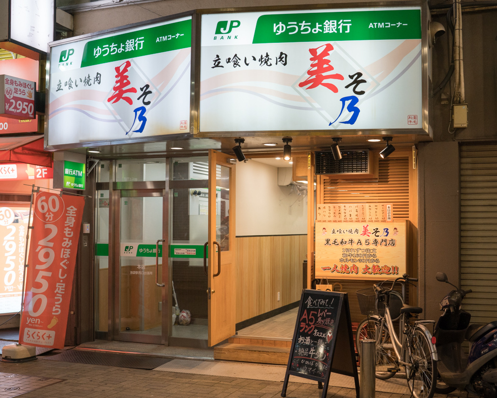
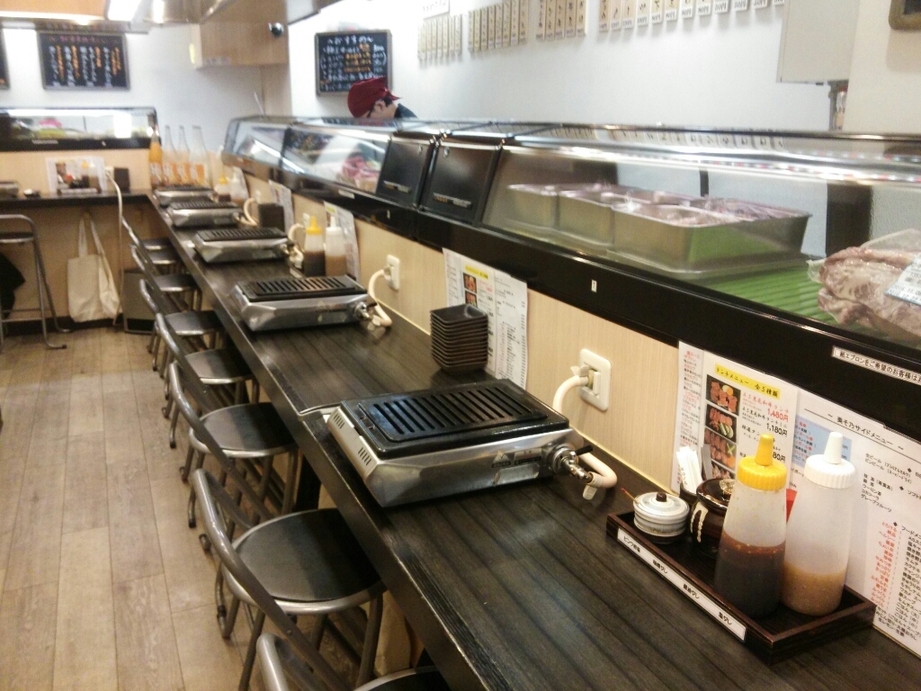
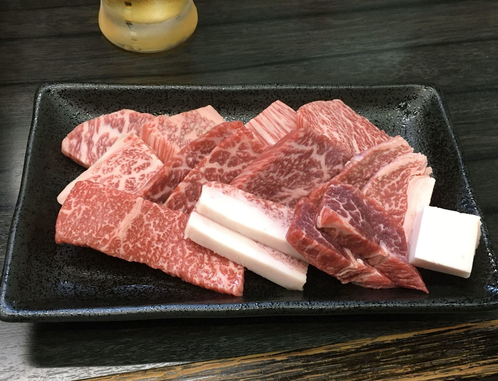

[東京 池袋]
ひとり焼肉 美そ乃

おすすめのポイント
池袋駅西口から、歩いて１分ほどのところにあるお店です。
このお店は、珍しい立食い焼肉のお店です。
立食い焼肉というだけあって、一人で来られる方が多いようです。
店内はカウンター式で、一人用のロースターでお肉を焼くことができます。

メニューは、一品ものから盛合わせ、食べ放題まであります！
さらに、お肉はA5ランクの高級肉を使用しているにも関わらず、リーズナブルな価格で非常におすすめです。

お店の情報
| 店名 | ひとり焼肉 美そ乃 |
|---|---|
| 住所 | 東京都豊島区西池袋1-18-1 五光ビル 1F |
| アクセス | 池袋西口徒歩1分
|
| 電話 | 03-5927-8830 |
| 営業時間 | 「月～(木)」
15：00～23：30（L.O.23:00） 「金」 15：00～24：00（L.O.23:30） 「土」 11：30〜24：00（L.O.23:30) 「日・祝」 11：30～23：30（L.O.23:00) 日曜営業 |
| 定休日 | 無休
|
| 予算 |
ランチ 2000～2999円
ディナー 4000～4999円 |
| HP |
https://tabelog.com/tokyo/A1305/ A130501/13193882/ |